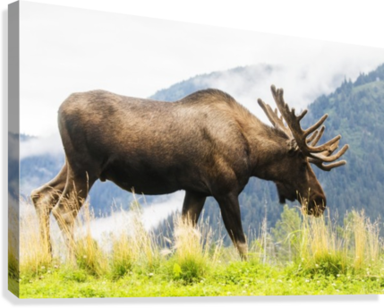
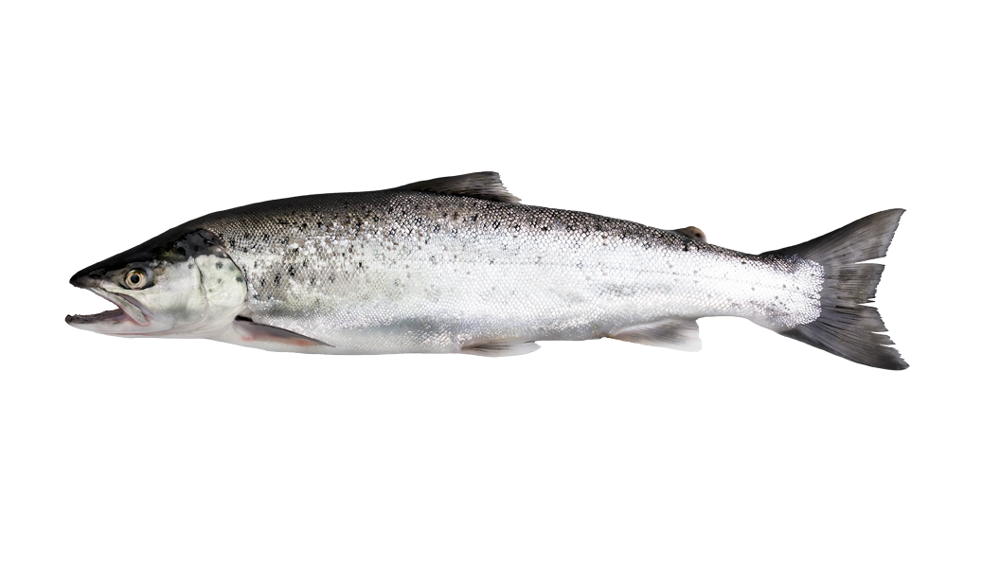
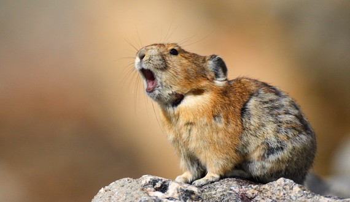

Climate change is one of the greatest challenges of our time. We are already seeing its effects with rising seas, catastrophic wildfires and water shortages. These changes are not only having a dramatic impact on diverse ecosystems but also on the wildlife that call these places home. Here are 9 species that are already being affected by climate change.
If we don’t act on climate now, this list is just the tip of the iceberg of what we can expect in years to come. Future generations shouldn’t just see these animals in history books -- we owe it to them to protect these creatures and their habitats.
1. Moose
Rising temperatures and booming parasite populations are expected to cause this cold-weather species that calls the northern United States and Canada home to move farther north. That’s because milder winters and less snow can lead to higher numbers of winter ticks. Tens of thousands of these parasites can gather on a single moose to feed on its blood -- weakening the animal’s immune system and often ending in death, especially the calves. Photo by National Park Service.

2. Salmon
Salmon require cold, fast-flowing streams and rivers to spawn. Changing stream flows and warming waters in the Pacific Northwest are already impacting some salmon species and populations. Higher temperatures have also led a harmful salmon parasite to invade Alaska’s Yukon River. So while salmon might currently be on the menu, climate change is expected to impact major commercial and recreational fishing industries in the coming years. Photo by Bureau of Land Management.

3. Snowshoe Hares
To help hide from predators, this North American rabbit has evolved to turn white in winter to blend in with the snow. With climate change, snow in some areas is melting earlier than the hares have grown accustomed to, leaving stark white hares exposed in snow-less landscapes. This increased vulnerability might cause declines in hare populations that could lead to implications for other species. Snowshoe hares are critical players in forest ecosystems. Photo by National Park Service.

4. American Pikas
About the size and shape of a hamster, the American pika typically lives at high elevations where cool, moist conditions prevail. Research by U.S. Geological Survey has found that pika populations are now disappearing from numerous areas that span from the Sierra Nevadas to the Rocky Mountains. Populations within some areas are migrating to higher elevations likely to avoid reduced snowpacks and warmer summer temperatures. Unfortunately, pikas are strongly tied to rocky-talus habitat that is limited and patchily distributed. This gives them few options as temperatures continue to rise.

Climate change is one of the greatest challenges of our time. We are already seeing its effects with rising seas, catastrophic wildfires and water shortages. These changes are not only having a dramatic impact on diverse ecosystems but also on the wildlife that call these places home. Here are 9 species that are already being affected by climate change. If we don’t act on climate now, this list is just the tip of the iceberg of what we can expect in years to come. Future generations shouldn’t just see these animals in history books -- we owe it to them to protect these creatures and their habitats.
1. Moose
Rising temperatures and booming parasite populations are expected to cause this cold-weather species that calls the northern United States and Canada home to move farther north. That’s because milder winters and less snow can lead to higher numbers of winter ticks. Tens of thousands of these parasites can gather on a single moose to feed on its blood -- weakening the animal’s immune system and often ending in death, especially the calves. Photo by National Park Service.
2. Salmon
Salmon require cold, fast-flowing streams and rivers to spawn. Changing stream flows and warming waters in the Pacific Northwest are already impacting some salmon species and populations. Higher temperatures have also led a harmful salmon parasite to invade Alaska’s Yukon River. So while salmon might currently be on the menu, climate change is expected to impact major commercial and recreational fishing industries in the coming years. Photo by Bureau of Land Management.
3. Snowshoe Hares
To help hide from predators, this North American rabbit has evolved to turn white in winter to blend in with the snow. With climate change, snow in some areas is melting earlier than the hares have grown accustomed to, leaving stark white hares exposed in snow-less landscapes. This increased vulnerability might cause declines in hare populations that could lead to implications for other species. Snowshoe hares are critical players in forest ecosystems. Photo by National Park Service.